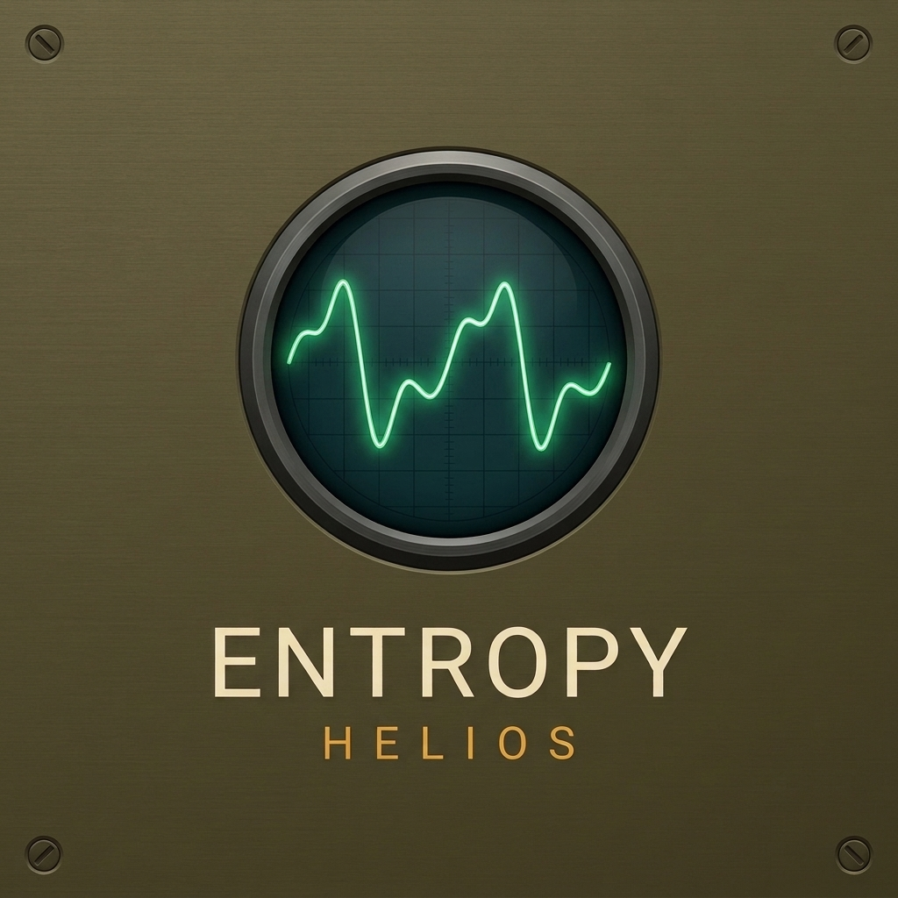

Entropy Helios transforms your M-VAVE FM-1 into a standalone dual-core 8-voice ambient drone & microtonal synthesizer—complete with 30 drone oscillators, dual analog-modeled VCFs, 16 stackable FX cartridges, 5 chassis finishes, and live USB Audio FX.

Voices and stereo filters split cleanly across Core 0 and Core 1 in real time, leaving generous headroom for lush reverbs, zero-blip audio, and a 240×240 photorealistic hardware UI.
Six 5-oscillator swarm drone voices with wave morphing, sub-octaves, and per-voice AR envelopes—paired with two expressive melodic voices, dual 5-step sequencers, and an 8-voice polyphonic play mode.
Switch live between Black, Cream, Amber Yellow, Cobalt Blue, and Olive finishes. Press any module button to smoothly expand it across 80% of the screen with giant 3D color-coded knobs.
20 warm, lush [CALM] presets with automatic Analog Warmth Guard, 8 cinematic [LUSH] presets, 8 experimental [EDGE] presets, plus 8 permanent flash slots that save your chassis finish and stacked FX.
Use the FM-1's 27 capacitive keys as 12 microtonal copper touch plates, a Hybrid split keyboard, or an 8-voice poly synth with 12-TET, Just Intonation, Pythagorean, Bohlen-Pierce, and Maqam tunings.
Patch dual LFOs (with audio-rate speed switch), S&H, analog slew limiter, envelope follower, key pressure, and an 8-second recordable 2D joystick to any destination.
Route external audio over USB-C directly through the dual analog VCFs, 3-Spring Tank, and 16 stacked FX cartridges. Includes external MIDI Clock sync, Scene A/B morphing, and a browser Patch Librarian.
Load any combination of effects simultaneously on FX → FX. Every cartridge has its own independent ON/OFF toggle, wet level (CART LVL), and tone/rate (CART TON)—plus a physical-modeled 3-Spring Reverb Tank with piezo kick.
Every module button cycles through its pages and exits cleanly back to HOME. Press SEL on any page to access its secondary SEL* knob layer, or press GLO twice for the built-in on-screen Quick Help.
| Button | Pages (Cycles back to HOME) | Key Shortcuts |
|---|---|---|
EDIT | Drone Bank L (V1–V3) → Drone Bank R (V6–V8) → 6-Drone Macro | Turn SELECT to pick voice • SEL* for Wave Morph, Hold, Attack, Pan |
ARP | Melodic V4 → Melodic V5 | SEL + ARP cycles Arpeggiator • SEL* for Level, Attack, Release |
SEQ | 5-Step Seq L → 5-Step Seq R | Play any key to step-record • SEL* for Length, Probability, Accent |
FX | Dual Analog VCF → 16-Cart Stack FX | SEL + FX = Spring Piezo Kick • On Carts: K2=ON/OFF, REC=Solo Cart |
ENV | Preamp, Noise & Master Bus | SEL* K1 switches Ext Source (Symbiosis / Live USB Audio In) |
LFO | 8×8 Modular CV Pin Matrix | SEL* for Slew Limiter, VCF LFO Depth, Joy Y, 5 Matrix Templates |
GLO | Chassis & Global → Quick Help | K1 switches all 5 Chassis Finishes • SEL* K3 = Audio-Rate LFO |
SAVE | Preset Management | Short press = Reset Preset • SEL+SAVE = Save User Slot • Hold 3s = Factory Reset |
No drivers or desktop software required. Open the standalone WebMIDI flasher in Chrome or Edge, plug in your M-VAVE FM-1 over USB-C, and click Install.
Verified with full browser OTA updates and permanent flash saves (U01–U08 user patches & settings) on both FM-1 revisions: original Puya P25Q80 (JEDEC 85 60 14) units and newer UC25HQ80 (JEDEC B3 60 14) units.